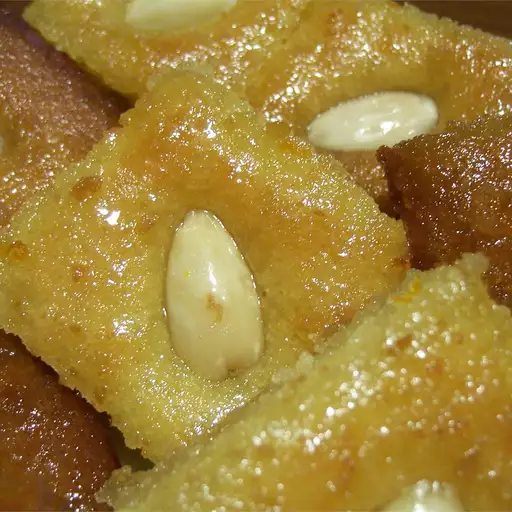

Basbosa

Description
This is a traditional Middle Eastern dessert made with semolina and yogurt,
then soaked in a rose water syrup.
Ingredients
- 1 ½ cups semolina flour
- ½ cup white sugar
- 1 cup plain yogurt
- ½ cup vegetable oil
- 3 tablespoons flaked coconut
- 1 tablespoon baking powde
- 6 whole almonds, split in half
- 1 ½ cups water
- 1 ¾ cups white sugar
- 2 tablespoons rose water
Directions
- In a medium bowl, mix together the semolina flour, 1/2 cup of sugar, yogurt, oil, coconut,
and baking powder. Set aside for 30 minutes.
- In a small saucepan over medium-high heat, stir together the water,
1 3/4 cups sugar, and rosewater. Bring to a boil, and boil for 3 or 4 minutes.
Remove from heat, and set aside to cool to room temperature.
- Preheat the oven to 350 degrees F (175 degrees C). Spread the semolina batter into the bottom of a 9x13 inch baking pan.
Slice into squares or diamonds,
and place on almond half onto each piece.
- Bake for 20 minutes in the preheated oven, or until light brown.
Switch the oven setting to broil, and broil until the top is golden, 2 to 3 minutes.
Remove from the oven, and pour the syrup over the squares. Serve warm.
- Enjoy!